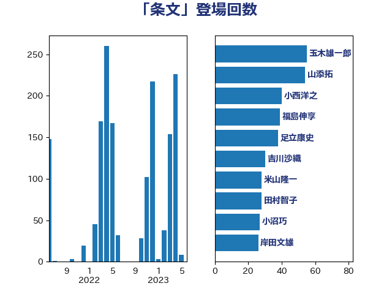

単語「条文」

| 玉木雄一郎 | 国民民主党 | 55 回 |
| 山添拓 | 日本共産党 | 54 回 |
| 小西洋之 | 立憲民主党 | 40 回 |
| 福島伸享 | 無所属 | 39 回 |
| 足立康史 | 日本維新の会 | 38 回 |
| 吉川沙織 | 立憲民主党 | 30 回 |
| 米山隆一 | 立憲民主党 | 28 回 |
| 田村智子 | 日本共産党 | 28 回 |
| 小沼巧 | 立憲民主党 | 27 回 |
| 岸田文雄 | 自由民主党 | 26 回 |
| 福島みずほ | 社会民主党 | 24 回 |
| 長妻昭 | 立憲民主党 | 23 回 |
| 階猛 | 立憲民主党 | 22 回 |
| 北神圭朗 | 無所属 | 20 回 |
| 西村康稔 | 自由民主党 | 19 回 |
| 小林鷹之 | 自由民主党 | 19 回 |
| 三木圭恵 | 日本維新の会 | 19 回 |
| 鈴木敦 | 国民民主党 | 18 回 |
| 西村智奈美 | 立憲民主党 | 18 回 |
| 田村まみ | 国民民主党 | 18 回 |
| 塩村あやか | 立憲民主党 | 17 回 |
| 仁比聡平 | 日本共産党 | 17 回 |
| 藤岡隆雄 | 立憲民主党 | 16 回 |
| 礒崎哲史 | 国民民主党 | 16 回 |
| 浜田聡 | NHK党 | 16 回 |
| 大塚耕平 | 国民民主党 | 16 回 |
| 山本剛正 | 日本維新の会 | 15 回 |
| 青柳仁士 | 日本維新の会 | 14 回 |
| 新藤義孝 | 自由民主党 | 14 回 |
| 笠井亮 | 日本共産党 | 12 回 |
| 神津たけし | 立憲民主党 | 12 回 |
| 沢田良 | 日本維新の会 | 10 回 |
| 徳永久志 | 立憲民主党 | 10 回 |
| 安江伸夫 | 公明党 | 10 回 |
| 奥野総一郎 | 立憲民主党 | 10 回 |
| 堀場幸子 | 日本維新の会 | 10 回 |
| 前川清成 | 日本維新の会 | 10 回 |
| 柚木道義 | 立憲民主党 | 9 回 |
| 本村伸子 | 日本共産党 | 9 回 |
| 國重徹 | 公明党 | 9 回 |
| 田中健 | 国民民主党 | 8 回 |
| 櫻井周 | 立憲民主党 | 8 回 |
| 後藤祐一 | 立憲民主党 | 8 回 |
| 天畠大輔 | れいわ新選組 | 8 回 |
| 塩川鉄也 | 日本共産党 | 8 回 |
| 古川禎久 | 自由民主党 | 8 回 |
| 馬場伸幸 | 日本維新の会 | 7 回 |
| 青山大人 | 立憲民主党 | 7 回 |
| 赤嶺政賢 | 日本共産党 | 7 回 |
| 漆間譲司 | 日本維新の会 | 7 回 |
| 池下卓 | 日本維新の会 | 7 回 |
| 梅村みずほ | 日本維新の会 | 7 回 |
| 山下貴司 | 自由民主党 | 7 回 |
| 加藤勝信 | 自由民主党 | 7 回 |
| 伊東信久 | 日本維新の会 | 7 回 |
| 高橋千鶴子 | 日本共産党 | 6 回 |
| 河野太郎 | 自由民主党 | 6 回 |
| 枝野幸男 | 立憲民主党 | 6 回 |
| 東徹 | 日本維新の会 | 6 回 |
| 杉尾秀哉 | 立憲民主党 | 6 回 |
| 打越さく良 | 立憲民主党 | 6 回 |
| 城井崇 | 立憲民主党 | 6 回 |
| 佐々木さやか | 公明党 | 6 回 |
| 馬淵澄夫 | 立憲民主党 | 5 回 |
| 音喜多駿 | 日本維新の会 | 5 回 |
| 芳賀道也 | 国民民主党 | 5 回 |
| 田村貴昭 | 日本共産党 | 5 回 |
| 浅野哲 | 国民民主党 | 5 回 |
| 櫛渕万里 | れいわ新選組 | 5 回 |
| 斉藤鉄夫 | 公明党 | 5 回 |
| 山本太郎 | れいわ新選組 | 5 回 |
| 宮崎政久 | 自由民主党 | 5 回 |
| 大串博志 | 立憲民主党 | 5 回 |
| 吉田宣弘 | 公明党 | 5 回 |
| 古庄玄知 | 自由民主党 | 5 回 |
| たがや亮 | れいわ新選組 | 5 回 |
| 高木かおり | 日本維新の会 | 4 回 |
| 阿部弘樹 | 日本維新の会 | 4 回 |
| 藤井比早之 | 自由民主党 | 4 回 |
| 舩後靖彦 | れいわ新選組 | 4 回 |
| 羽田次郎 | 立憲民主党 | 4 回 |
| 石橋通宏 | 立憲民主党 | 4 回 |
| 田島麻衣子 | 立憲民主党 | 4 回 |
| 林芳正 | 自由民主党 | 4 回 |
| 後藤茂之 | 自由民主党 | 4 回 |
| 岩谷良平 | 日本維新の会 | 4 回 |
| 小野泰輔 | 日本維新の会 | 4 回 |
| 宮本徹 | 日本共産党 | 4 回 |
| 宮本岳志 | 日本共産党 | 4 回 |
| 吉田統彦 | 立憲民主党 | 4 回 |
| 吉川元 | 立憲民主党 | 4 回 |
| 串田誠一 | 日本維新の会 | 4 回 |
| 一谷勇一郎 | 日本維新の会 | 4 回 |
| 齋藤健 | 自由民主党 | 3 回 |
| 鬼木誠 | 立憲民主党 | 3 回 |
| 高市早苗 | 自由民主党 | 3 回 |
| 鎌田さゆり | 立憲民主党 | 3 回 |
| 鈴木義弘 | 国民民主党 | 3 回 |
| 野村哲郎 | 自由民主党 | 3 回 |
| 道下大樹 | 立憲民主党 | 3 回 |
| 越智隆雄 | 自由民主党 | 3 回 |
| 舟山康江 | 国民民主党 | 3 回 |
| 石垣のりこ | 立憲民主党 | 3 回 |
| 牧野たかお | 自由民主党 | 3 回 |
| 熊谷裕人 | 立憲民主党 | 3 回 |
| 源馬謙太郎 | 立憲民主党 | 3 回 |
| 浅田均 | 日本維新の会 | 3 回 |
| 横沢高徳 | 立憲民主党 | 3 回 |
| 森山浩行 | 立憲民主党 | 3 回 |
| 本庄知史 | 立憲民主党 | 3 回 |
| 木原稔 | 自由民主党 | 3 回 |
| 星北斗 | 自由民主党 | 3 回 |
| 斎藤嘉隆 | 立憲民主党 | 3 回 |
| 川田龍平 | 立憲民主党 | 3 回 |
| 山本順三 | 自由民主党 | 3 回 |
| 山岸一生 | 立憲民主党 | 3 回 |
| 山下芳生 | 日本共産党 | 3 回 |
| 小山展弘 | 立憲民主党 | 3 回 |
| 大口善徳 | 公明党 | 3 回 |
| 倉林明子 | 日本共産党 | 3 回 |
| 伊藤岳 | 日本共産党 | 3 回 |
| 伊佐進一 | 公明党 | 3 回 |
| 須藤元気 | 無所属 | 2 回 |
| 青柳陽一郎 | 立憲民主党 | 2 回 |
| 門山宏哲 | 自由民主党 | 2 回 |
| 金村龍那 | 日本維新の会 | 2 回 |
| 逢坂誠二 | 立憲民主党 | 2 回 |
| 葉梨康弘 | 自由民主党 | 2 回 |
| 萩生田光一 | 自由民主党 | 2 回 |
| 石川大我 | 立憲民主党 | 2 回 |
| 石井章 | 日本維新の会 | 2 回 |
| 田野瀬太道 | 無所属 | 2 回 |
| 片山さつき | 自由民主党 | 2 回 |
| 熊田裕通 | 自由民主党 | 2 回 |
| 泉田裕彦 | 自由民主党 | 2 回 |
| 森屋隆 | 立憲民主党 | 2 回 |
| 梅村聡 | 日本維新の会 | 2 回 |
| 松本尚 | 自由民主党 | 2 回 |
| 東国幹 | 自由民主党 | 2 回 |
| 杉久武 | 公明党 | 2 回 |
| 新垣邦男 | 立憲民主党 | 2 回 |
| 掘井健智 | 日本維新の会 | 2 回 |
| 岩渕友 | 日本共産党 | 2 回 |
| 山谷えり子 | 自由民主党 | 2 回 |
| 山田賢司 | 自由民主党 | 2 回 |
| 山田勝彦 | 立憲民主党 | 2 回 |
| 小沢雅仁 | 立憲民主党 | 2 回 |
| 小森卓郎 | 自由民主党 | 2 回 |
| 小倉將信 | 自由民主党 | 2 回 |
| 塩田博昭 | 公明党 | 2 回 |
| 堤かなめ | 立憲民主党 | 2 回 |
| 勝部賢志 | 立憲民主党 | 2 回 |
| 井上哲士 | 日本共産党 | 2 回 |
| 中野洋昌 | 公明党 | 2 回 |
| 中川正春 | 立憲民主党 | 2 回 |
| 上田清司 | 国民民主党 | 2 回 |
| 馬場雄基 | 立憲民主党 | 1 回 |
| 青木愛 | 立憲民主党 | 1 回 |
| 青山繁晴 | 自由民主党 | 1 回 |
| 長谷川岳 | 自由民主党 | 1 回 |
| 長友慎治 | 国民民主党 | 1 回 |
| 鈴木隼人 | 自由民主党 | 1 回 |
| 鈴木淳司 | 自由民主党 | 1 回 |
| 鈴木俊一 | 自由民主党 | 1 回 |
| 金子恵美 | 立憲民主党 | 1 回 |
| 金城泰邦 | 公明党 | 1 回 |
| 野田国義 | 立憲民主党 | 1 回 |
| 進藤金日子 | 自由民主党 | 1 回 |
| 輿水恵一 | 公明党 | 1 回 |
| 赤澤亮正 | 自由民主党 | 1 回 |
| 赤池誠章 | 自由民主党 | 1 回 |
| 谷川とむ | 自由民主党 | 1 回 |
| 藤木眞也 | 自由民主党 | 1 回 |
| 蓮舫 | 立憲民主党 | 1 回 |
| 茂木敏充 | 自由民主党 | 1 回 |
| 美延映夫 | 日本維新の会 | 1 回 |
| 緒方林太郎 | 無所属 | 1 回 |
| 篠原孝 | 立憲民主党 | 1 回 |
| 神田潤一 | 自由民主党 | 1 回 |
| 石井苗子 | 日本維新の会 | 1 回 |
| 石井準一 | 自由民主党 | 1 回 |
| 甘利明 | 自由民主党 | 1 回 |
| 牧義夫 | 立憲民主党 | 1 回 |
| 牧山ひろえ | 立憲民主党 | 1 回 |
| 浜地雅一 | 公明党 | 1 回 |
| 水野素子 | 立憲民主党 | 1 回 |
| 榛葉賀津也 | 国民民主党 | 1 回 |
| 森本真治 | 立憲民主党 | 1 回 |
| 柿沢未途 | 無所属 | 1 回 |
| 柴田巧 | 日本維新の会 | 1 回 |
| 松野博一 | 自由民主党 | 1 回 |
| 松本剛明 | 自由民主党 | 1 回 |
| 杉本和巳 | 日本維新の会 | 1 回 |
| 末松信介 | 自由民主党 | 1 回 |
| 早稲田ゆき | 立憲民主党 | 1 回 |
| 平木大作 | 公明党 | 1 回 |
| 市村浩一郎 | 日本維新の会 | 1 回 |
| 工藤彰三 | 自由民主党 | 1 回 |
| 川合孝典 | 国民民主党 | 1 回 |
| 岸真紀子 | 立憲民主党 | 1 回 |
| 岡田克也 | 立憲民主党 | 1 回 |
| 山田宏 | 自由民主党 | 1 回 |
| 山本佐知子 | 自由民主党 | 1 回 |
| 山崎誠 | 立憲民主党 | 1 回 |
| 山岡達丸 | 立憲民主党 | 1 回 |
| 尾崎正直 | 自由民主党 | 1 回 |
| 小池晃 | 日本共産党 | 1 回 |
| 小宮山泰子 | 立憲民主党 | 1 回 |
| 守島正 | 日本維新の会 | 1 回 |
| 大石あきこ | れいわ新選組 | 1 回 |
| 大島敦 | 立憲民主党 | 1 回 |
| 國場幸之助 | 自由民主党 | 1 回 |
| 吉良よし子 | 日本共産党 | 1 回 |
| 吉田久美子 | 公明党 | 1 回 |
| 古川俊治 | 自由民主党 | 1 回 |
| 勝俣孝明 | 自由民主党 | 1 回 |
| 務台俊介 | 自由民主党 | 1 回 |
| 前原誠司 | 国民民主党 | 1 回 |
| 住吉寛紀 | 日本維新の会 | 1 回 |
| 井坂信彦 | 立憲民主党 | 1 回 |
| 丹羽秀樹 | 自由民主党 | 1 回 |
| 中谷一馬 | 立憲民主党 | 1 回 |
| 中田宏 | 自由民主党 | 1 回 |
| 中村裕之 | 自由民主党 | 1 回 |
| 上月良祐 | 自由民主党 | 1 回 |
| あかま二郎 | 自由民主党 | 1 回 |